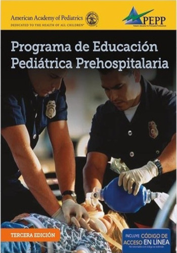
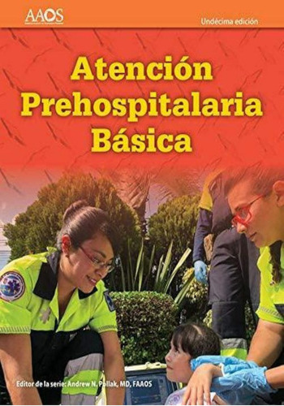

E-Urgencias
Pasion por salvar vidas
Siguenos


Recursos
Amplia tus conocimientos con los videotutoriales y manuales compartidos por nuestros colaboradores . . .
Cateterizacion venosa central CVC Video donde se puede apreciar la tecnica correcta para la colocacion de un CVC en la vena subclavia.
Puesto Medico Avanzado del SAMU de Jalisco En este video podemos apreciar el puesto medico avanzado unico en el pais con la capacidad de instalarse en escenarios de multiples victimas con la capacidad de atenter hasta 18 pacientes.
Manuales
Seguridad Clínica en los servicios de Emergencias Prehospitalarios

Se centra en la importancia del trabajo en equipo y en las características propias de la seguridad clínica. Para ello, propone estrategias de gestión para introducir pilares fundamentales de la seguridad clínica en los servicios de emergencias y dota de herramientas de mejora y buenas prácticas. Cuenta con la participación de 44 autores procedentes de varios países y que son expertos en los distintos aspectos que componen la cultura en seguridad clínica.
Curso basico de atencion prehospitalaria(CBAPH)
El Curso Básico de Atención Prehospitalaria, se origina a partir del Curso de Asistente de Primeros Auxilios Avanzados (APAA) y está dirigido a todo el personal de primera respuesta que no tripula ambulancias cotidianamente. Es un curso pre requisito para el Curso Intermedio de Atención Prehospitalaria (CIAPH).
EMT Atencion prehospitalaria basica
La undécima edición se alinea con los estándares médicos actuales -- desde PHTLS hasta ILCOR -- e incorpora conceptos médicos basados en evidencia para garantizar que los estudiantes e instructores tengan una interpretación precisa y profunda de la ciencia médica y su aplicación en la medicina prehospitalaria de hoy en día.
Manejo De Vía Aérea Y Ventilación Mecánica Prehospitalario
El manual AVENTHO PH está dirigido a proporcionar las herramientas necesarias para los primeros minutos de la atención del paciente en ambiente prehospitalario, desde el manejo apropiado de la vía aérea, la programación inicial de la ventilación mecánica y el soporte respiratorio crítico durante el traslado del enfermo grave, que beneficiaran significativamente el pronóstico del paciente, no solo a la lelgada al servicio de urgencias o a la unidad hospitalaria, sino aumentar las posibilidades de sobrevida.